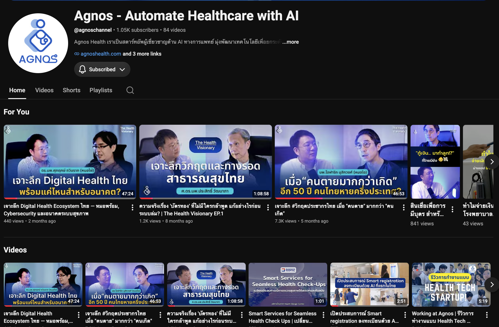
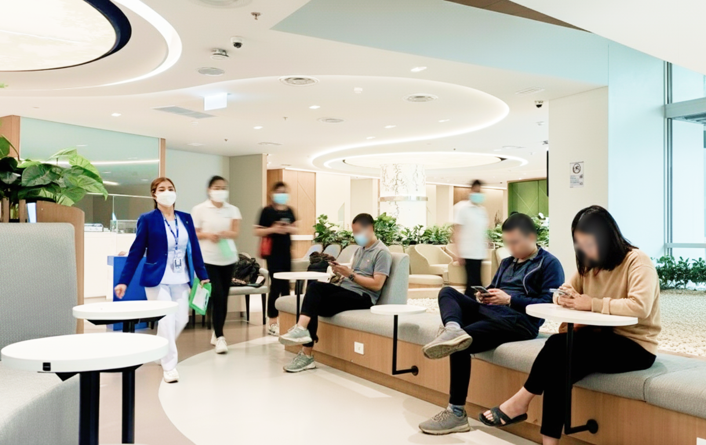
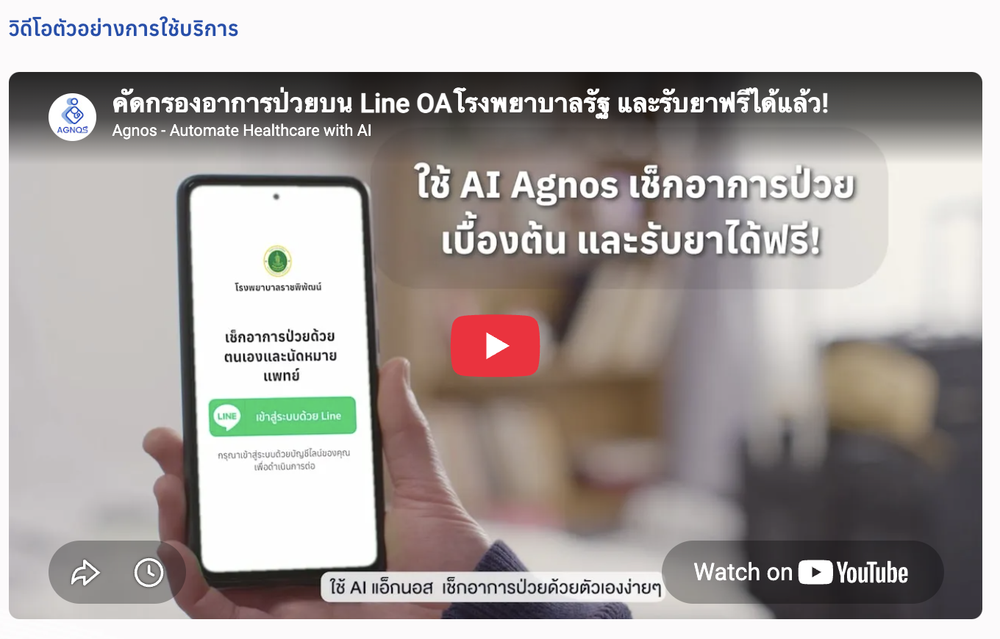
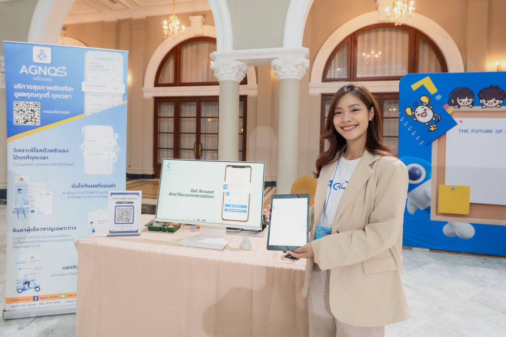
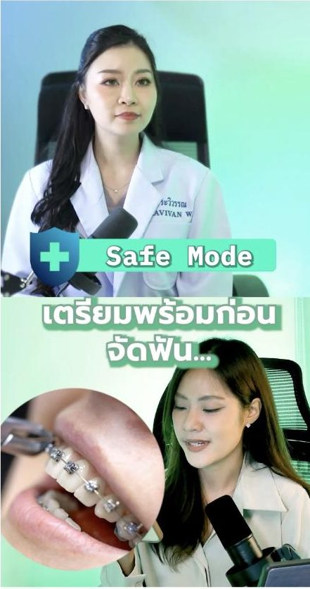

Hi, I'm Ornnalin.
Hi, I'm Ornnalin.
Healthcare marketer. Strategic communicator. Systems builder.
Healthcare marketer. Strategic communicator. Systems builder.
ฉันเปลี่ยนองค์ความรู้ด้านสุขภาพที่ซับซ้อนให้เป็นการสื่อสารที่ผู้คนเข้าใจ ไว้วางใจ และนำไปใช้ได้จริง
I turn complex healthcare knowledge into communication people understand, trust, and act on.
ฉันช่วยองค์กรด้านสุขภาพเปลี่ยน Customer Insight ให้กลายเป็นประสบการณ์ที่ผู้คนไว้วางใจ การสื่อสารที่มีความหมาย และการเติบโตอย่างยั่งยืน
I help healthcare organizations turn customer insight into trusted experiences, meaningful communication, and sustainable growth.
พอร์ตโฟลิโอนี้รวบรวมโปรเจกต์ แนวคิด และเฟรมเวิร์กที่สะท้อนวิธีคิดและประสบการณ์ของฉันตลอดการทำงานใน HealthTech
This portfolio showcases selected projects, ideas, and frameworks from my journey in HealthTech.
ดาวน์โหลดเรซูเม่ Download Resumeทำงานใน HealthTech Startup เชื่อมการเติบโตของแพลตฟอร์ม B2C กับความร่วมมือด้าน B2B ภายใน Healthcare Ecosystem
HealthTech startups, bridging B2C growth with B2B healthcare partnerships across the healthcare ecosystem.
สร้างการเติบโตของแพลตฟอร์ม B2C ผ่านความร่วมมือกับภาครัฐ สื่อ Earned Media และแคมเปญเชิงกลยุทธ์
B2C platform growth driven by government partnerships, earned media, and strategic campaigns.
Organic Reach ภายใน 6 เดือนแรกของช่อง รวมกว่า 400,000 ครั้ง พร้อมวิดีโอที่มียอดรับชมกว่า 280,000 ครั้ง โดยไม่ใช้งบโฆษณา
Organic views in the channel's first 6 months, including 280K+ on a single clip—with zero ad spend.
กรณีศึกษา
Case Studies

280K+ views จากกลยุทธ์ Thought LeadershipBuilding awareness before enterprise salesจากแบรนด์ B2C สู่พาร์ทเนอร์ HealthTech ที่ได้รับความไว้วางใจ
From B2C brand to trusted HealthTech partner

เปลี่ยนผล -59% ให้เป็นอาวุธปิดดีลTurning a -59% result into a deal-closing assetB2B Enterprise Proof Asset และระบบ Sales Enablement
From proof-less results to the asset that closes hospital deals

27 เท่าใน 4 ปี บน LINE OA+300% B2C platform growthจากพาร์ทเนอร์ภาครัฐ สู่คนไทยหลักหมื่นบน LINE OA
From government partnerships to scalable platform growth
 5 Pillars · 307 tasks · นำทีม5 pillars · 307 tasks · leading the team
5 Pillars · 307 tasks · นำทีม5 pillars · 307 tasks · leading the team
จากคนลงมือทำ สู่คนวางระบบและนำทีม
From maker to systems designer and team lead
การสื่อสารการตลาดและประสบการณ์ภาคสนาม
Marketing Communications & Field Experience
โปรเจกต์เพิ่มเติมที่สะท้อนขอบเขตงานด้านการตลาดสุขภาพ การสื่อสาร และอีเวนต์ที่ฉันทำ
Additional projects that showcase the breadth of my work across healthcare marketing, communications, and events.
 50+ ข่าว · สื่อ 20+ สำนัก
50+ stories · 20+ media outlets
50+ ข่าว · สื่อ 20+ สำนัก
50+ stories · 20+ media outlets
สร้างความเชื่อใจผ่านการสื่อสารด้านสุขภาพ
Building Trust Through Healthcare Communications
50+ ข่าว · earned media จากสื่อ 20+ สำนัก · ขึ้นพูดบนเวที 2 ครั้ง
50+ press pieces · earned media across 20+ outlets · spoke on 2 industry stages

อีเวนต์ด้านสุขภาพ 20+ งาน 20+ healthcare eventsเป็นตัวแทนแบรนด์ผ่านงานอีเวนต์ด้านสุขภาพ
Representing the Brand Through Healthcare Events
ออกบูธ 20+ งาน · เก็บและคัดกรองลีด · คุมโปรดักชันหน้างานทุกชิ้น
20+ event booths · lead capture & qualification · full on-site production

12 คลิป · reach 25K+ 12 clips · 25K+ reachสร้างความน่าเชื่อถือให้แพทย์เฉพาะทางผ่านคอนเทนต์ให้ความรู้
Building Specialist Credibility Through Educational Content
25K+ reach · บทความ 546 page views · วิดีโอให้ความรู้ 12 ตอน
25K+ reach · 546 article page views · 12 educational videos
งานล่าสุดและแคมเปญที่ทำอยู่ปัจจุบันไม่ได้เผยแพร่ไว้ที่นี่ ยินดีนำเสนอเพิ่มเติมเมื่อได้พูดคุยกัน ติดต่อเพื่อขอดู →
Current campaigns and recent work aren't published here. Happy to walk through them in conversation. Get in touch →
ขอบคุณที่สละเวลาอ่านมาถึงตรงนี้ค่ะ
Thanks for taking the time to read this.
โตมากับแม่ที่เป็นพยาบาล ฉันได้สัมผัสความเป็นจริงของระบบสาธารณสุขมาตั้งแต่เด็ก การเห็นความท้าทายในชีวิตประจำวันที่ทั้งคนไข้และบุคลากรทางการแพทย์ต้องเจอ หล่อหลอมความเชื่อของฉันว่า การดูแลสุขภาพควรเข้าถึงง่ายกว่านี้ เข้าใจง่ายกว่านี้ และมีคนเป็นศูนย์กลางมากกว่านี้
Growing up with a mother who worked as a nurse, I experienced the realities of healthcare from an early age. Seeing the everyday challenges faced by both patients and healthcare professionals shaped my belief that healthcare should be more accessible, understandable, and human-centered.
ความเชื่อนี้พาฉันไปเรียนด้าน Medical and Science Media ที่ฉันได้ค้นพบว่าการสื่อสารเป็นมากกว่าการส่งต่อข้อมูล — มันช่วยให้คนเข้าใจ สร้างความเชื่อใจ และตัดสินใจได้ดีขึ้น
That belief led me to study Medical and Science Media, where I discovered that communication is more than delivering information—it helps people understand, build trust, and make better decisions.
ทุกวันนี้ ฉันออกแบบการสื่อสารเชิงกลยุทธ์โดยย้อนกลับจากพฤติกรรมที่อยากสร้างแรงบันดาลใจให้เกิดขึ้น ผสมผสาน customer insight จิตวิทยาพฤติกรรม และเป้าหมายทางธุรกิจ เพื่อสร้างคอนเทนต์ แคมเปญ และประสบการณ์ลูกค้า ที่เชื่อมเป้าหมายองค์กรเข้ากับความต้องการที่แท้จริงของคน
Today, I design strategic communication by working backward from the behavior we want to inspire. I combine customer insights, behavioral psychology, and business objectives to create content, campaigns, and customer experiences that connect organizational goals with real human needs.
หัวใจสำคัญของทุกสิ่งที่ฉันทำคือความเชื่อนี้:
At the core of everything I do is this belief:
“การตลาดที่ดีไม่ได้เริ่มจากการโปรโมท แต่เริ่มจากความเข้าใจคน”
“Great marketing doesn't begin with promotion. It begins with understanding people.”
ฉันเชื่อว่าการสื่อสารควรทำมากกว่าแค่แจ้งข้อมูล มันควรสร้างความเข้าใจ หล่อหลอมความเชื่อ และจุดประกายการกระทำที่มีความหมาย — เพราะการเปลี่ยนพฤติกรรมที่ยั่งยืนเริ่มต้นจากความเชื่อใจ ไม่ใช่การโน้มน้าว พอร์ตนี้คือคอลเลกชันโปรเจกต์ แคมเปญ และเฟรมเวิร์กที่ฉันสร้างขึ้นตลอดเส้นทางในวงการ HealthTech
I believe communication should do more than inform. It should build understanding, shape beliefs, and inspire meaningful action—because lasting behavior change begins with trust, not persuasion.
— อรนลิน ตลับทอง
— Ornnalin Talubthong
มาคุยกันเถอะ
Let's build something meaningful together.
สนใจงานด้าน Marketing & Content Leadership สาย Health, Wellness และ Tech
I'm always happy to connect with people working at the intersection of healthcare, marketing, and technology.